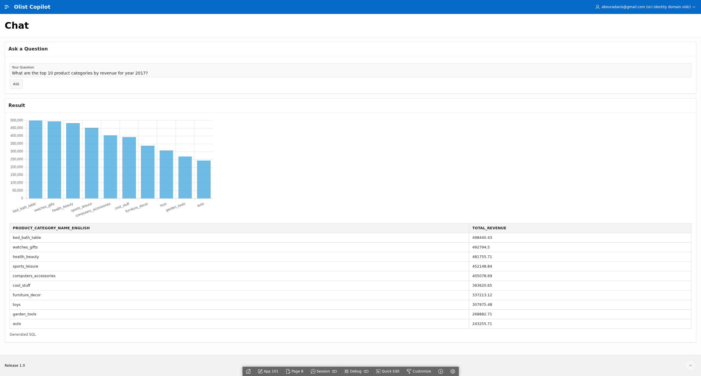
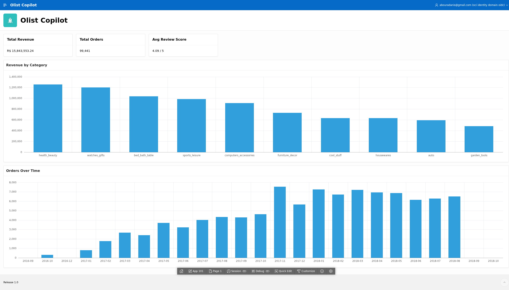
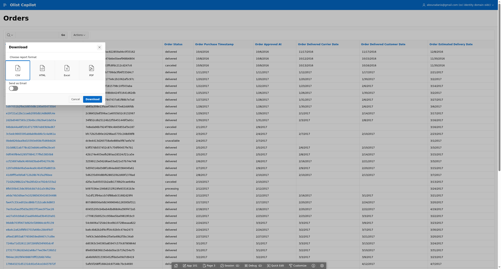
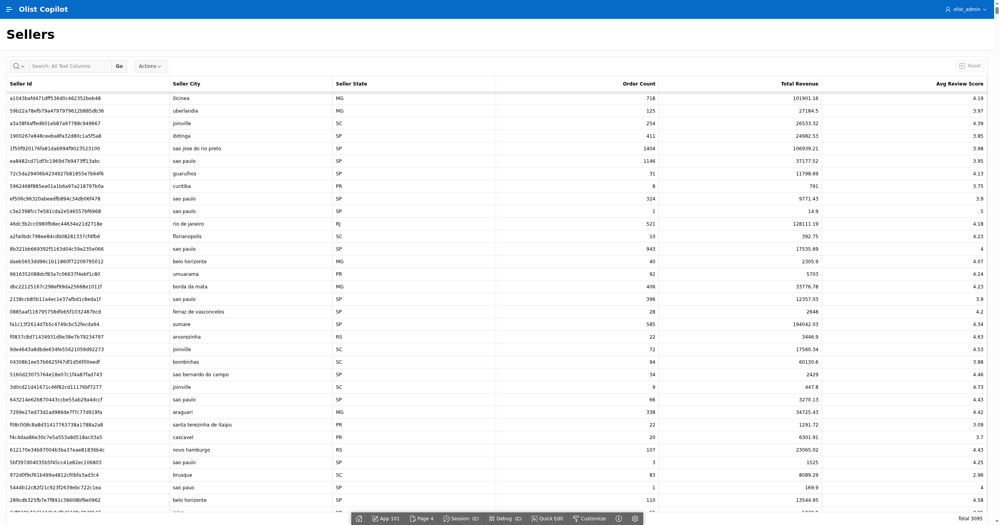
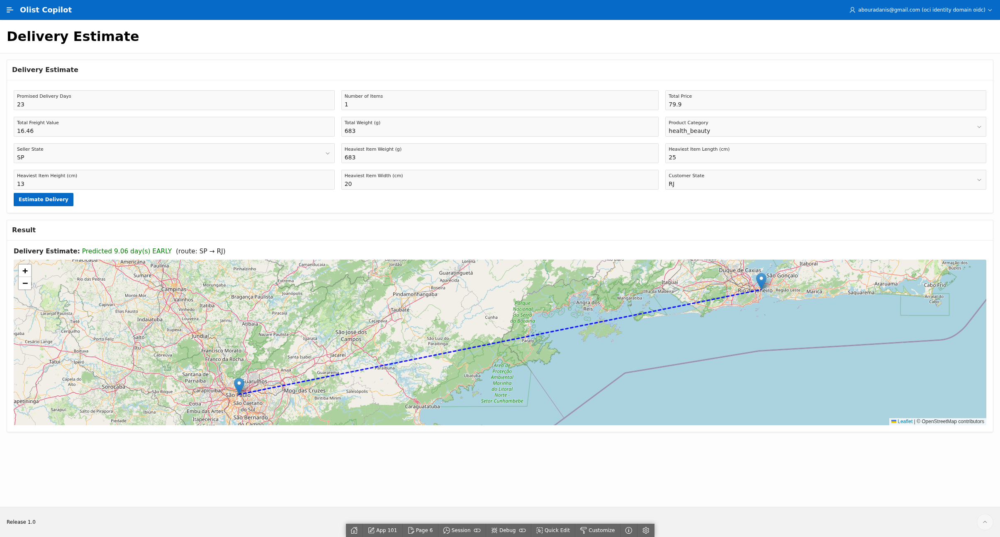
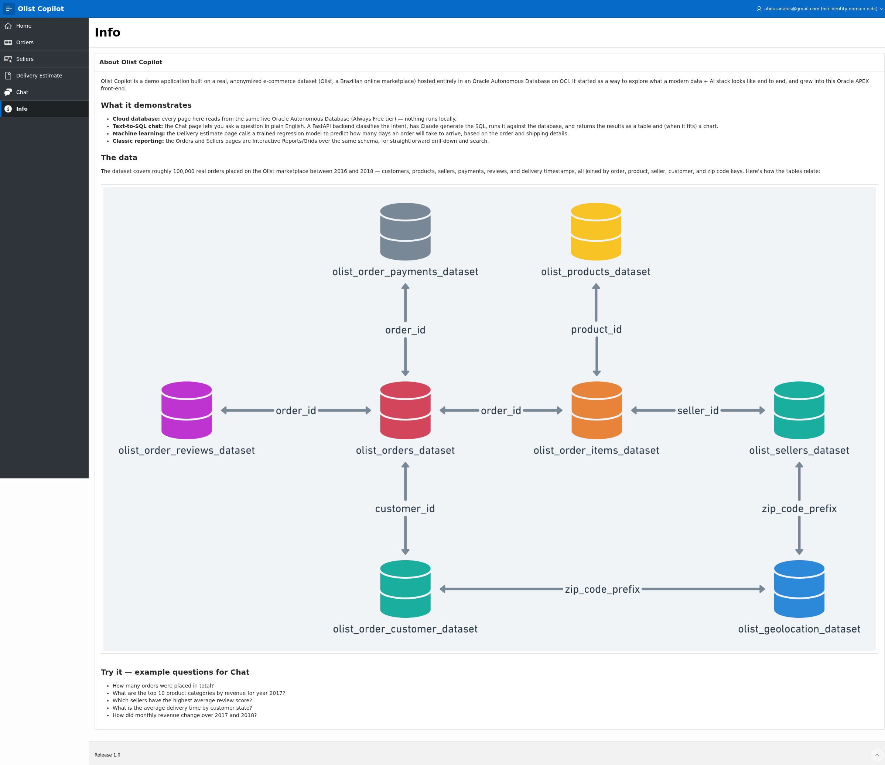

A Brazilian e-commerce dataset — 99k real orders, sellers, reviews, and shipments — loaded into an Oracle Autonomous Database and fronted by Oracle APEX. Ask it a question in plain English and it writes the SQL itself; ask it about a shipment and a trained regression model predicts the delay.

Revenue, order count, and average review score at a glance, plus revenue-by-category and orders-over-time — built as plain Oracle APEX regions over live SQL, no app logic involved.
The classic APEX reporting pair: a searchable, drillable order history and a seller leaderboard with revenue and review-score rollups — the part of the app that needed no AI at all to be useful.
Enter a shipment's weight, distance, and price and a GLM regression model — trained separately in OML4Py, served through FastAPI — predicts how many days early or late it'll arrive, plotted on a Leaflet map.
A free-text question goes to Claude, which writes a read-only SELECT against the live schema; the result renders as a table and, when the shape allows, a Chart.js bar chart — entirely client-side, so FastAPI only ever returns JSON.
A plain-language tour of the nine underlying tables and how they join, plus five ready-to-try example questions for the Chat page.
There's no client-visible token to steal and no password rendered in a page anywhere. APEX signs every request server-side; FastAPI verifies the signature server-side. The browser only ever sees JSON.




